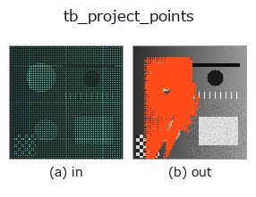

typed op• データ種: points → keypoints
• 呼び出し: fullseye.apply(img, "tb_project_points", a=0.5, b=0.5) (2-D は 1 画像 + 2 スカラつまみ a,b∈[0,1] のモデル)

*図は合成の入力 128×128 で実際に走らせた出力。左が入力、右が出力。点群は上から見た散布(明るさ = z)、1-D 列は折れ線、体積は z 方向の最大値投影、動画は中央フレーム、複素画像は振幅、絵にならない返り値は値そのもの。*
*つまみ a は出力を変えない(実測: 0.1 / 0.5 / 0.9 で同一)。*
*つまみ b は出力を変えない(実測: 0.1 / 0.5 / 0.9 で同一)。*
段階(前置きの op → この op。左から順):
▸ tb_project_points: stages (docs site)
別の画像でも(合成シーン / 写真 / 硬貨。上段が入力、下段がその出力。つまみは既定):
▸ tb_project_points: other inputs (docs site)
3D 点群 (N,3) → 画像座標 (u,v) と深度。ピンホール(depth_to_points の順方向)。
K=カメラ内部行列 [[fx,0,cx],[0,fy,cy],[0,0,1]]。R,t で外部姿勢。世界モデルの観測写像。
`P_cam = R @ P + t(R (3,3)、t (3,)。None は恒等・零)を u = fx·X/Z + cx`、
`v = fy·Y/Z + cy で投影する。返り値 (uv (N,2), depth (N,)): uv[:,0] = u`(列)、
`uv[:,1] = v(行)、depth` はカメラ座標の Z(clip 前の生値で、負もそのまま)。
`K は K[0,0]` 等で添字するので numpy 配列(nested list は不可)。
Z は `1e-6` 以上に clip してから割るので、カメラ後方の点も捨てず巨大な u,v になる
(`depth > 0 で呼び手が除く)。画像外の点も返す(render_point_depth` が範囲で切る)。
`depth_to_points の逆で、depth_to_points(render_point_depth(...))` が往復になる。
2-D 進化レジストリへ橋渡しした 3d の op `project_points。実装は同じで、呼び出し規約だけ op(v, a, b) に合わせてある。この op に調整点は無く、a も b` も使われない。
• サンプルデータ カタログ(DL URL / ライセンス) — 2-D は skimage.data(BSD/public)+ 合成、3-D は実データ源(Stanford/PDS 等)の DL URL。
• 演算子の来歴・参考文献 — この op 族の元になった研究/手法の出典。
下のプログラムは実際に走ることを確かめてある(図と同じ入力)。Studio のヘルプではこのブロックがボタンになり、その場で読み込んで実行できる。
img_to_points 0.50 0.50 tb_project_points 0.50 0.50
▸ Load this pipeline · Load & run
次の例は元の台帳 op project_points を呼ぶもの。この橋渡し op は同じ実装を fn(v, a, b) 規約に合わせただけなので、挙動はそのまま当てはまる(呼び出し形だけ違う)。
• pnp_pose_outliers — py -3.11 examples_3d/pnp_pose_outliers.py
• pose_estimation — py -3.11 examples_3d/pose_estimation.py
keypoints を入力に取れる)identity · tb_keypoints_uv_to_points · tb_keypoints_to_image2d
typed)tb_points_to_voxel · tb_estimate_point_normals · tb_iss_keypoints · tb_angle_3points · tb_render_point_depth · tb_statistical_outlier_removal · tb_radius_outlier_removal · tb_voxel_grid_downsample
*Provenance: ops.py — 2D operator registry. この per-op ノートは tools/opdocs.py md が自動生成(手編集しない)。*
© 2026 Kazufumi Furuse — Fullseye operator documentation. Licensed under Apache-2.0.
{kind=link}
{kind=link}